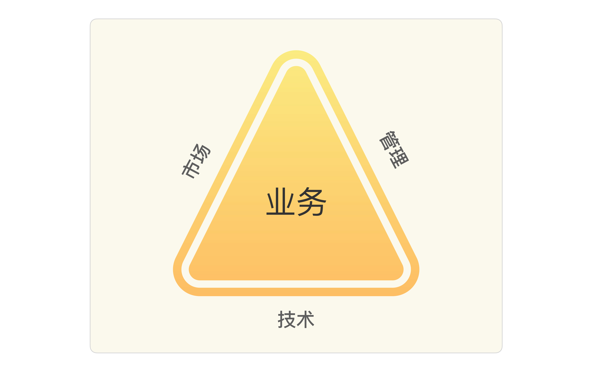

- 00 开篇词 照着做，你也能成为架构师！.md.html
- 01 架构到底是指什么？.md.html
- 02 架构设计的历史背景.md.html
- 03 架构设计的目的.md.html
- 04 复杂度来源：高性能.md.html
- 05 复杂度来源：高可用.md.html
- 06 复杂度来源：可扩展性.md.html
- 07 复杂度来源：低成本、安全、规模.md.html
- 08 架构设计三原则.md.html
- 09 架构设计原则案例.md.html
- 10 架构设计流程：识别复杂度.md.html
- 11 架构设计流程：设计备选方案.md.html
- 12 架构设计流程：评估和选择备选方案.md.html
- 13 架构设计流程：详细方案设计.md.html
- 14 高性能数据库集群：读写分离.md.html
- 15 高性能数据库集群：分库分表.md.html
- 16 高性能NoSQL.md.html
- 17 高性能缓存架构.md.html
- 18 单服务器高性能模式：PPC与TPC.md.html
- 19 单服务器高性能模式：Reactor与Proactor.md.html
- 20 高性能负载均衡：分类及架构.md.html
- 21 高性能负载均衡：算法.md.html
- 22 想成为架构师，你必须知道CAP理论.md.html
- 23 想成为架构师，你必须掌握的CAP细节.md.html
- 24 FMEA方法，排除架构可用性隐患的利器.md.html
- 25 高可用存储架构：双机架构.md.html
- 26 高可用存储架构：集群和分区.md.html
- 27 如何设计计算高可用架构？.md.html
- 28 业务高可用的保障：异地多活架构.md.html
- 29 异地多活设计4大技巧.md.html
- 30 异地多活设计4步走.md.html
- 31 如何应对接口级的故障？.md.html
- 32 可扩展架构的基本思想和模式.md.html
- 33 传统的可扩展架构模式：分层架构和SOA.md.html
- 34 深入理解微服务架构：银弹 or 焦油坑？.md.html
- 35 微服务架构最佳实践 - 方法篇.md.html
- 36 微服务架构最佳实践 - 基础设施篇.md.html
- 37 微内核架构详解.md.html
- 38 架构师应该如何判断技术演进的方向？.md.html
- 39 互联网技术演进的模式.md.html
- 40 互联网架构模板：存储层技术.md.html
- 41 互联网架构模板：开发层和服务层技术.md.html
- 42 互联网架构模板：网络层技术.md.html
- 43 互联网架构模板：用户层和业务层技术.md.html
- 44 互联网架构模板：平台技术.md.html
- 45 架构重构内功心法第一式：有的放矢.md.html
- 46 架构重构内功心法第二式：合纵连横.md.html
- 47 架构重构内功心法第三式：运筹帷幄.md.html
- 48 再谈开源项目：如何选择、使用以及二次开发？.md.html
- 49 谈谈App架构的演进.md.html
- 50 架构实战：架构设计文档模板.md.html
- 51 如何画出优秀的软件系统架构图？.md.html
- 加餐｜业务架构实战营开营了.md.html
- 加餐｜单服务器高性能模式性能对比.md.html
- 加餐｜扒一扒中台皇帝的外衣.md.html
- 如何高效地学习开源项目 华仔，放学别走！ 第3期.md.html
- 新书首发 《从零开始学架构》.md.html
- 架构专栏特别放送 华仔，放学别走！ 第2期.md.html
- 架构专栏特别放送 华仔，放学别走！第1期.md.html
- 架构师必读书单 华仔，放学别走！ 第5期.md.html
- 架构师成长之路 华仔，放学别走！ 第4期.md.html
- 结束语 坚持，成就你的技术梦想.md.html
- 捐赠
38 架构师应该如何判断技术演进的方向？
互联网的出现不但改变了普通人的生活方式，同时也促进了技术圈的快速发展和开放。在开源和分享两股力量的推动下，最近10多年的技术发展可以说是目不暇接，你方唱罢我登场，大的方面有大数据、云计算、人工智能等，细分的领域有NoSQL、Node.js、Docker容器化等。各个大公司也乐于将自己的技术分享出来，以此来提升自己的技术影响力，打造圈内技术口碑，从而形成强大的人才吸引力，典型的有，Google的大数据论文、淘宝的全链路压测、微信的红包高并发技术等。
对于技术人员来说，技术的快速发展当然是一件大好事，毕竟这意味着技术百宝箱中又多了更多的可选工具，同时也可以通过学习业界先进的技术来提升自己的技术实力。但对于架构师来说，除了这些好处，却也多了“甜蜜的烦恼”：面对层出不穷的新技术，我们应该采取什么样的策略？
架构师可能经常会面临下面这些诱惑或者挑战：
- 现在Docker虚拟化技术很流行，我们要不要引进，引入Docker后可以每年节省几十万元的硬件成本呢？
- 竞争对手用了阿里的云计算技术，听说因为上了云，业务增长了好几倍呢，我们是否也应该尽快上云啊？
- 我们的技术和业界顶尖公司（例如，淘宝、微信）差距很大，应该投入人力和时间追上去，不然招聘的时候没有技术影响力！
- 公司的技术发展现在已经比较成熟了，程序员都觉得在公司学不到东西，我们可以尝试引入Golang来给大家一个学习新技术的机会。
类似的问题还有很多，本质上都可以归纳总结为一个问题：架构师应该如何判断技术演进的方向？
关于这个问题的答案，基本上可以分为几个典型的派别：
1.潮流派
潮流派的典型特征就是对于新技术特别热衷，紧跟技术潮流，当有新的技术出现时，迫切想将新的技术应用到自己的产品中。
例如：
- NoSQL很火，咱们要大规模地切换为NoSQL。
- 大数据好牛呀，将我们的MySQL切换为Hadoop吧。
- Node.js使得JavaScript统一前后端，这样非常有助于开展工作。
2.保守派
保守派的典型特征和潮流派正好相反，对于新技术抱有很强的戒备心，稳定压倒一切，已经掌握了某种技术，就一直用这种技术打天下。就像有句俗语说的，“如果你手里有一把锤子，那么所有的问题都变成了钉子”，保守派就是拿着一把锤子解决所有的问题。
例如：
- MySQL咱们用了这么久了，很熟悉了，业务用MySQL，数据分析也用MySQL，报表还用MySQL吧。
- Java语言我们都很熟，业务用Java，工具用Java，平台也用Java。
3.跟风派
跟风派与潮流派不同，这里的跟风派不是指跟着技术潮流，而是指跟着竞争对手的步子走。
简单来说，判断技术的发展就看竞争对手，竞争对手用了咱们就用，竞争对手没用咱们就等等看。
例如：
- 这项技术腾讯用了吗？腾讯用了我们就用。
- 阿里用了Hadoop，他们都在用，肯定是好东西，咱们也要尽快用起来，以提高咱们的竞争力。
- Google都用了Docker，咱们也用吧。
不同派别的不同做法本质上是价值观的不同：潮流派的价值观是新技术肯定能带来很大收益；稳定派的价值观是稳定压倒一切；跟风派的价值观是别人用了我就用。这些价值观本身都有一定的道理，但如果不考虑实际情况生搬硬套，就会出现“橘生淮南则为橘，生于淮北则为枳”的情况。
下面我们来看一下不同的派别可能存在的问题。
1.潮流派
首先，新技术需要时间成熟，如果刚出来就用，此时新技术还不怎么成熟，实际应用中很可能遇到各种“坑”，自己成了实验小白鼠。
其次，新技术需要学习，需要花费一定的时间去掌握，这个也是较大的成本；如果等到掌握了技术后又发现不适用，则是一种较大的人力浪费。
2.保守派
保守派的主要问题是不能享受新技术带来的收益，因为新技术很多都是为了解决以前技术存在的固有缺陷。就像汽车取代马车一样，不是量变而是质变，带来的收益不是线性变化的，而是爆发式变化的。如果无视技术的发展，形象一点说就是有了拖拉机，你还偏偏要用牛车。
3.跟风派
可能很多人都会认为，跟风派与“潮流派”和“保守派”相比，是最有效的策略，既不会承担“潮流派”的风险，也不会遭受“保守派”的损失，花费的资源也少，简直就是一举多得。
看起来很美妙，但跟风派最大的问题在于如果没有风可跟的时候怎么办。如果你是领头羊怎么办，其他人都准备跟你的风呢？另外一种情况就是竞争对手的这些信息并不那么容易获取，即使获取到了一些信息，大部分也是不全面的，一不小心可能就变成邯郸学步了。
即使有风可跟，其实也存在问题。有时候适用于竞争对手的技术，并不一定适用于自己，盲目模仿可能带来相反的效果。
既然潮流派、保守派、跟风派都存在这样或者那样的问题，那架构师究竟如何判断技术演进的方向呢？
技术演进的动力
这个问题之所以让人困惑，关键的原因还是在于不管是潮流派、保守派，还是跟风派，都是站在技术本身的角度来考虑问题的，正所谓“不识庐山真面，只缘身在此山中”。因此，要想看到“庐山真面目”，只有跳出技术的范畴，从一个更广更高的角度来考虑这个问题，这个角度就是企业的业务发展。
无论是代表新兴技术的互联网企业，还是代表传统技术的制造业；无论是通信行业，还是金融行业的发展，归根到底就是业务的发展。而影响一个企业业务的发展主要有3个因素：市场、技术、管理，这三者构成支撑业务发展的铁三角，任何一个因素的不足，都可能导致企业的业务停滞不前。

在这个铁三角中，业务处于三角形的中心，毫不夸张地说，市场、技术、管理都是为了支撑企业业务的发展。在专栏里，我主要探讨“技术”和“业务”之间的关系和互相如何影响。
我们可以简单地将企业的业务分为两类：一类是产品类，一类是服务类。
产品类：360的杀毒软件、苹果的iPhone、UC的浏览器等都属于这个范畴，这些产品本质上和传统的制造业产品类似，都是具备了某种“功能”，单个用户通过购买或者免费使用这些产品来完成自己相关的某些任务，用户对这些产品是独占的。
服务类：百度的搜索、淘宝的购物、新浪的微博、腾讯的IM等都属于这个范畴，大量用户使用这些服务来完成需要与其他人交互的任务，单个用户“使用”但不“独占”某个服务。事实上，服务的用户越多，服务的价值就越大。服务类的业务符合互联网的特征和本质：“互联”+“网”。
对于产品类业务，答案看起来很明显：技术创新推动业务发展！
例如：
- 苹果开发智能手机，将诺基亚推下王座，自己成为全球手机行业的新王者。
- 2G时代，UC浏览器独创的云端架构，很好地解决了上网慢的问题；智能机时代，UC浏览器又自主研发全新的U3内核，兼顾高速、安全、智能及可扩展性，这些技术创新是UC浏览器成为了全球最大的第三方手机浏览器最强有力的推动力。
为何对于产品类的业务，技术创新能够推动业务发展呢？答案在于用户选择一个产品的根本驱动力在于产品的功能是否能够更好地帮助自己完成任务。用户会自然而然地选择那些功能更加强大、性能更加先进、体验更加顺畅、外观更加漂亮的产品，而功能、性能、体验、外观等都需要强大的技术支撑。例如，iPhone手机的多点触摸操作、UC浏览器的U3内核等。
对于“服务”类的业务，答案和产品类业务正好相反：业务发展推动技术的发展！
为什么会出现截然相反的差别呢？主要原因是用户选择服务的根本驱动力与选择产品不同。用户选择一个产品的根本驱动力是其“功能”，而用户选择一个服务的根本驱动力不是功能，而是“规模”。
例如，选择UC浏览器还是选择QQ浏览器，更多的人是根据个人喜好和体验来决定的；而选择微信还是Whatsapp，就不是根据它们之间的功能差异来选择的，而是根据其规模来选择的，就像我更喜欢Whatsapp的简洁，但我的朋友和周边的人都用微信，那我也不得不用微信。
当“规模”成为业务的决定因素后，服务模式的创新就成为了业务发展的核心驱动力，而产品只是为了完成服务而提供给用户使用的一个载体。以淘宝为例，淘宝提供的“网络购物”是一种新的服务，这种业务与传统的到实体店购物是完全不同的，而为了完成这种业务，需要“淘宝网”“支付宝”“一淘”和“菜鸟物流”等多个产品。随便一个软件公司，如果只是模仿开发出类似的产品，只要愿意投入，半年时间就可以将这些产品全部开发出来。但是这样做并没有意义，因为用户选择的是淘宝的整套网络购物服务，并且这个服务已经具备了一定的规模，其他公司不具备这种同等规模服务的能力。即使开发出完全一样的产品，用户也不会因为产品功能更加强大而选择新的类似产品。
以微信为例，同样可以得出类似结论。假如我们进行技术创新，开发一个耗电量只有微信的1/10，用户体验比微信好10倍的产品，你觉得现在的微信用户都会抛弃微信，而转投我们的这个产品吗？我相信绝大部分人都不会，因为微信不是一个互联网产品，而是一个互联网服务，你一个人换到其他类微信类产品是没有意义的。
因此，服务类的业务发展路径是这样的：提出一种创新的服务模式→吸引了一批用户→业务开始发展→吸引了更多用户→服务模式不断完善和创新→吸引越来越多的用户，如此循环往复。在这个发展路径中，技术并没有成为业务发展的驱动力，反过来由于用户规模的不断扩展，业务的不断创新和改进，对技术会提出越来越高的要求，因此是业务驱动了技术发展。
其实回到产品类业务，如果我们将观察的时间拉长来看，即使是产品类业务，在技术创新开创了一个新的业务后，后续的业务发展也会反向推动技术的发展。例如，第一代iPhone缺少对3G的支持，且只能通过Web发布应用程序，第二代iPhone才开始支持3G，并且内置GPS；UC浏览器随着功能越来越强大，原有的技术无法满足业务发展的需求，浏览器的架构需要进行更新，先后经过UC浏览器7.0版本、8.0版本、9.0版本等几个技术差异很大的版本。
综合这些分析，除非是开创新的技术能够推动或者创造一种新的业务，其他情况下，都是业务的发展推动了技术的发展。
技术演进的模式
明确了技术发展主要的驱动力是业务发展后，我们来看看业务发展究竟是如何驱动技术发展的。
业务模式千差万别，有互联网的业务（淘宝、微信等），有金融的业务（中国平安、招商银行等），有传统企业的业务（各色ERP对应的业务）等，但无论什么模式的业务，如果业务的发展需要技术同步发展进行支撑，无一例外是因为业务“复杂度”的上升，导致原有的技术无法支撑。
按照专栏前面所介绍的复杂度分类，复杂度要么来源于功能不断叠加，要么来源于规模扩大，从而对性能和可用性有了更高的要求。既然如此，判断到底是什么复杂度发生了变化就显得至关重要了。是任何时候都要同时考虑功能复杂度和规模复杂度吗？还是有时候考虑功能复杂度，有时候考虑规模复杂度？还是随机挑一个复杂度的问题解决就可以了？
所以，对于架构师来说，判断业务当前和接下来一段时间的主要复杂度是什么就非常关键。判断不准确就会导致投入大量的人力和时间做了对业务没有作用的事情，判断准确就能够做到技术推动业务更加快速发展。那架构师具体应该按照什么标准来判断呢？
答案就是基于业务发展阶段进行判断，这也是为什么架构师必须具备业务理解能力的原因。不同的行业业务发展路径、轨迹、模式不一样，架构师必须能够基于行业发展和企业自身情况做出准确判断。
假设你是一个银行IT系统的架构师：
- 90年代主要的业务复杂度可能就是银行业务范围逐渐扩大，功能越来越复杂，导致内部系统数量越来越多，单个系统功能越来越复杂。
- 2004年以后主要的复杂度就是银行业务从柜台转向网上银行，网上银行的稳定性、安全性、易用性是主要的复杂度，这些复杂度主要由银行IT系统自己解决。
- 2009年以后主要的复杂度又变化为移动支付复杂度，尤其是“双11”这种海量支付请求的情况下，高性能、稳定性、安全性是主要的复杂度，而这些复杂度需要银行和移动支付服务商（支付宝、微信）等一起解决。
而如果你是淘宝这种互联网业务的架构师，业务发展又会是另外一种模式：
- 2003年，业务刚刚创立，主要的复杂度体现为如何才能快速开发各种需求，淘宝团队采取的是买了一个PHP写的系统来改。
- 2004年，上线后业务发展迅速，用户请求数量大大增加，主要的复杂度体现为如何才能保证系统的性能，淘宝的团队采取的是用Oracle取代MySQL。
- 用户数量再次增加，主要的复杂度还是性能和稳定性，淘宝的团队采取的是Java替换PHP。
- 2005年，用户数量继续增加，主要的复杂度体现为单一的Oracle库已经无法满足性能要求，于是进行了分库分表、读写分离、缓存等优化。
- 2008年，淘宝的商品数量在1亿以上，PV2.5亿以上，主要的复杂度又变成了系统内部耦合，交易和商品耦合在一起，支付的时候又和支付宝强耦合，整个系统逻辑复杂，功能之间跳来跳去，用户体验也不好。淘宝的团队采取的是系统解耦，将交易中心、类目管理、用户中心从原来大一统的系统里面拆分出来。
小结
今天我为你讲了架构师该如何判断技术演进的方向，希望对你有所帮助。
这就是今天的全部内容，留一道思考题给你吧，如果业界已经有了一个明显的参照对象（例如电商企业可以参考淘宝），那架构师是否还需要按照步骤逐步演进，还是直接将架构一步到位设计好？
© 2019 - 2023 Liangliang Lee. Powered by gin and hexo-theme-book.